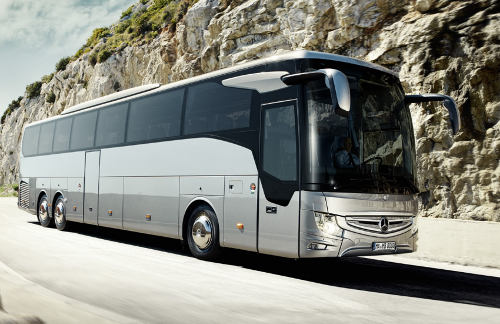

Mercedes-Benz Tourismo
 Ez a busz 12,3, 13,1 illetve 14 méter hosszú változatban kapható. A 13,1 méter hosszú változatból van kettő illetve három tengelyes változat is. A 12,3 méteres buszban 53 fő utazhat, a 13,1 méteresben 57 illetve a két tengelyes változatban 59 fő. És a leghosszabb változatban 60fő utazhat. Ez a busz olyan 15-20 tonna körül van.
Setra S531 DT
 Ez a busz vezető állása megegyezik a Mercedesével, ez azért lehetséges mert a Setra a mercedes tulajdonában van. Csak ez az igazán luxus illetve a kényelmesebb busz. Egy ilyennel volt szerencsém szerbiába utazni. A légrugós futóműve nagyon szépen kimozogta a rosz magyar illetve szerb utakat. A karosszéria lényegében siklott az út felett. Ez egy emeletes kialakítású busz. Ami nekem nem túl előnyös, mert így se fent se lent nem férek el kényelmesen, ha mozgni kell a buszon.
Ez a busz vezető állása megegyezik a Mercedesével, ez azért lehetséges mert a Setra a mercedes tulajdonában van. Csak ez az igazán luxus illetve a kényelmesebb busz. Egy ilyennel volt szerencsém szerbiába utazni. A légrugós futóműve nagyon szépen kimozogta a rosz magyar illetve szerb utakat. A karosszéria lényegében siklott az út felett. Ez egy emeletes kialakítású busz. Ami nekem nem túl előnyös, mert így se fent se lent nem férek el kényelmesen, ha mozgni kell a buszon.
Volvo 9700 DD
 Ennek a busznak a különlegessége hogy már nem hagyományos tükrökkel rendelkezik hanem, kamerákkal oldják meg. Ez egy emeletes kialakítású busz. Ami nekem nem túl előnyös, mert így se fent se lent nem férek el kényelmesen, ha mozgni kell a buszon.
Ennek a busznak a különlegessége hogy már nem hagyományos tükrökkel rendelkezik hanem, kamerákkal oldják meg. Ez egy emeletes kialakítású busz. Ami nekem nem túl előnyös, mert így se fent se lent nem férek el kényelmesen, ha mozgni kell a buszon.
Volvo 9900
 Ez a busz a 9700-asnál nagyobb kényelmet ad. Sokkal drágább, viszont sem kamerás tükrökkel, sem emelettel nem rendelkezik. Viszont az utasok valószínűleg jobban élvezik vele az utat.
Ez a busz a 9700-asnál nagyobb kényelmet ad. Sokkal drágább, viszont sem kamerás tükrökkel, sem emelettel nem rendelkezik. Viszont az utasok valószínűleg jobban élvezik vele az utat.